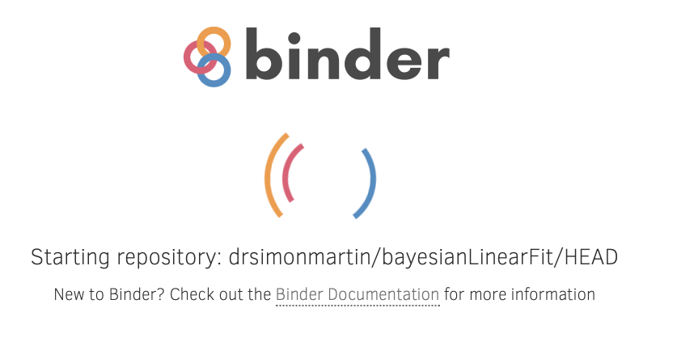

Getting Bayes Done#
Introduction#
So far the problems looked at in these notes have been fairly abstract and/or simple in order to show the fundemental principles of bayesian methods. This chapter explores how to move to calculations for realistic data (type and scale of models). There is a reasonable amount that can be done via algebraic methods. However, the maths rapidly gets reasonably complicated and is only tractable for a limited number of cases (data models). Historically this is one of the things that has held back the development of Bayesian methods. Since the 1990s a range of computer based methods have been developed that from the users’ point of view sidestep much of the complex mathematics. This chapter will show how these can be used.
Monte Carlo or bust#
The previous chapter shows that for low dimensional problems the calculations can be done by calculating the product of the prior and likelihood distributions. However, as the dimensionality (number of parameters) increases this becomes impossible1 and other methods are required.
These other methods that we will concentrate on are known as Monte Carlo methods. These are not the only game in town. Other methods include Variational Bayes and the Integrated Nested Laplace approximation (INLA).
A quick introduction to Monte Carlo methods#
Monte Carlo (MC) methods get their name from the famous casino as they depend on using random numbers. We’ll take a quick look now at why/how random numbers are useful in calculations. Let’s consider a definite integral: $\(\int_a^bf(x)dx\)$. To compute the value of this we might turn to some variation of Simpon’s Rule or the Trapezium rule. This would involve slicing the funtion up into strips and adding up the areas of these. For the sorts of problems you will have seen in your Mathematics lectures these will have been fine, but as the dimensionality of the problem increases these methods get extremely numerically intensive and sensitive to rounding issues. MC methods get around this via an alternative way of presenting integrals.
The value of the integral above is given by the average value of \(f(x)\) in the range \(a \rightarrow b\). That is:
where \(x_i\) are numbers distributed evenly in the range \(a\le x \le b\) and \(n\) is the number of values calculated. <f(x)> represents the most likely value (i.e. average) of the function - the expected value. It is sometimes written as \(E(x)\).
When the calculation is done using evenly distributed \(x\) values the relation has the same form as Simpon’s rule, but we can also take random, but uniformly distributed, trial values of \(f(x)\) s in the given range - a so called Monte Carlo process. With enough samples the the result will converge to the expected value.
In a more advanced course on this topic we would explore how to do this sampling. For this module will will use an established tool for doing the calculations needed to perform a Bayesian analysis.
Specifically, we will use the PyMC library - a modern, python based, system allows probabalistic models to be built in a straightforward way.
PyMC#
PyMC is one of the most popular systems for Bayesian analysis. Other examples you may come across are Stan, and Jags. For more routine work you may like to try JASP which provides an SPSS-like interface and can do frequentist as well as Bayesian analysis.
It has not been possible to get PyMC installed on the lab computers this year (there is a freeze ahead of the move to Windows 11). To help get you started with the system we will use a web-based tutorial page: PyMC demo. This runs the demo on a remote machine. You may see a start screen that looks like this: 
Be patient it will start a Jupyter notebook that you can edit and run cells in.
- 1
Really! It doesn’t take long to get to a model that it would take the most powerful computers the age of the universe to explore.